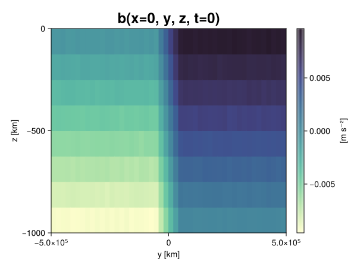

Baroclinic adjustment
In this example, we simulate the evolution and equilibration of a baroclinically unstable front.
Install dependencies
First let's make sure we have all required packages installed.
using Pkg
pkg"add Oceananigans, CairoMakie"using Oceananigans
using Oceananigans.UnitsGrid
We use a three-dimensional channel that is periodic in the x direction:
Lx = 1000kilometers # east-west extent [m]
Ly = 1000kilometers # north-south extent [m]
Lz = 1kilometers # depth [m]
grid = RectilinearGrid(size = (48, 48, 8),
x = (0, Lx),
y = (-Ly/2, Ly/2),
z = (-Lz, 0),
topology = (Periodic, Bounded, Bounded))48×48×8 RectilinearGrid{Float64, Periodic, Bounded, Bounded} on CPU with 3×3×3 halo
├── Periodic x ∈ [0.0, 1.0e6) regularly spaced with Δx=20833.3
├── Bounded y ∈ [-500000.0, 500000.0] regularly spaced with Δy=20833.3
└── Bounded z ∈ [-1000.0, 0.0] regularly spaced with Δz=125.0Model
We built a HydrostaticFreeSurfaceModel with an ImplicitFreeSurface solver. Regarding Coriolis, we use a beta-plane centered at 45° South.
model = HydrostaticFreeSurfaceModel(; grid,
coriolis = BetaPlane(latitude = -45),
buoyancy = BuoyancyTracer(),
tracers = :b,
momentum_advection = WENO(),
tracer_advection = WENO())HydrostaticFreeSurfaceModel{CPU, RectilinearGrid}(time = 0 seconds, iteration = 0)
├── grid: 48×48×8 RectilinearGrid{Float64, Periodic, Bounded, Bounded} on CPU with 3×3×3 halo
├── timestepper: QuasiAdamsBashforth2TimeStepper
├── tracers: b
├── closure: Nothing
├── buoyancy: BuoyancyTracer with ĝ = NegativeZDirection()
├── free surface: ImplicitFreeSurface with gravitational acceleration 9.80665 m s⁻²
│ └── solver: FFTImplicitFreeSurfaceSolver
├── advection scheme:
│ ├── momentum: WENO reconstruction order 5
│ └── b: WENO reconstruction order 5
└── coriolis: BetaPlane{Float64}We start our simulation from rest with a baroclinically unstable buoyancy distribution. We use ramp(y, Δy), defined below, to specify a front with width Δy and horizontal buoyancy gradient M². We impose the front on top of a vertical buoyancy gradient N² and a bit of noise.
"""
ramp(y, Δy)
Linear ramp from 0 to 1 between -Δy/2 and +Δy/2.
For example:
```
y < -Δy/2 => ramp = 0
-Δy/2 < y < -Δy/2 => ramp = y / Δy
y > Δy/2 => ramp = 1
```
"""
ramp(y, Δy) = min(max(0, y/Δy + 1/2), 1)
N² = 1e-5 # [s⁻²] buoyancy frequency / stratification
M² = 1e-7 # [s⁻²] horizontal buoyancy gradient
Δy = 100kilometers # width of the region of the front
Δb = Δy * M² # buoyancy jump associated with the front
ϵb = 1e-2 * Δb # noise amplitude
bᵢ(x, y, z) = N² * z + Δb * ramp(y, Δy) + ϵb * randn()
set!(model, b=bᵢ)Let's visualize the initial buoyancy distribution.
using CairoMakie
# Build coordinates with units of kilometers
x, y, z = 1e-3 .* nodes(grid, (Center(), Center(), Center()))
b = model.tracers.b
fig, ax, hm = heatmap(view(b, 1, :, :),
colormap = :deep,
axis = (xlabel = "y [km]",
ylabel = "z [km]",
title = "b(x=0, y, z, t=0)",
titlesize = 24))
Colorbar(fig[1, 2], hm, label = "[m s⁻²]")
fig
Simulation
Now let's build a Simulation.
simulation = Simulation(model, Δt=20minutes, stop_time=20days)Simulation of HydrostaticFreeSurfaceModel{CPU, RectilinearGrid}(time = 0 seconds, iteration = 0)
├── Next time step: 20 minutes
├── Elapsed wall time: 0 seconds
├── Wall time per iteration: NaN days
├── Stop time: 20 days
├── Stop iteration : Inf
├── Wall time limit: Inf
├── Callbacks: OrderedDict with 4 entries:
│ ├── stop_time_exceeded => Callback of stop_time_exceeded on IterationInterval(1)
│ ├── stop_iteration_exceeded => Callback of stop_iteration_exceeded on IterationInterval(1)
│ ├── wall_time_limit_exceeded => Callback of wall_time_limit_exceeded on IterationInterval(1)
│ └── nan_checker => Callback of NaNChecker for u on IterationInterval(100)
├── Output writers: OrderedDict with no entries
└── Diagnostics: OrderedDict with no entriesWe add a TimeStepWizard callback to adapt the simulation's time-step,
conjure_time_step_wizard!(simulation, IterationInterval(20), cfl=0.2, max_Δt=20minutes)Also, we add a callback to print a message about how the simulation is going,
using Printf
wall_clock = Ref(time_ns())
function print_progress(sim)
u, v, w = model.velocities
progress = 100 * (time(sim) / sim.stop_time)
elapsed = (time_ns() - wall_clock[]) / 1e9
@printf("[%05.2f%%] i: %d, t: %s, wall time: %s, max(u): (%6.3e, %6.3e, %6.3e) m/s, next Δt: %s\n",
progress, iteration(sim), prettytime(sim), prettytime(elapsed),
maximum(abs, u), maximum(abs, v), maximum(abs, w), prettytime(sim.Δt))
wall_clock[] = time_ns()
return nothing
end
add_callback!(simulation, print_progress, IterationInterval(100))Diagnostics/Output
Here, we save the buoyancy, $b$, at the edges of our domain as well as the zonal ($x$) average of buoyancy.
u, v, w = model.velocities
ζ = ∂x(v) - ∂y(u)
B = Average(b, dims=1)
U = Average(u, dims=1)
V = Average(v, dims=1)
filename = "baroclinic_adjustment"
save_fields_interval = 0.5day
slicers = (east = (grid.Nx, :, :),
north = (:, grid.Ny, :),
bottom = (:, :, 1),
top = (:, :, grid.Nz))
for side in keys(slicers)
indices = slicers[side]
simulation.output_writers[side] = JLD2OutputWriter(model, (; b, ζ);
filename = filename * "_$(side)_slice",
schedule = TimeInterval(save_fields_interval),
overwrite_existing = true,
indices)
end
simulation.output_writers[:zonal] = JLD2OutputWriter(model, (; b=B, u=U, v=V);
filename = filename * "_zonal_average",
schedule = TimeInterval(save_fields_interval),
overwrite_existing = true)JLD2OutputWriter scheduled on TimeInterval(12 hours):
├── filepath: ./baroclinic_adjustment_zonal_average.jld2
├── 3 outputs: (b, u, v)
├── array type: Array{Float64}
├── including: [:grid, :coriolis, :buoyancy, :closure]
├── file_splitting: NoFileSplitting
└── file size: 30.7 KiBNow we're ready to run.
@info "Running the simulation..."
run!(simulation)
@info "Simulation completed in " * prettytime(simulation.run_wall_time)[ Info: Running the simulation...
[ Info: Initializing simulation...
[00.00%] i: 0, t: 0 seconds, wall time: 21.486 seconds, max(u): (0.000e+00, 0.000e+00, 0.000e+00) m/s, next Δt: 20 minutes
[ Info: ... simulation initialization complete (22.102 seconds)
[ Info: Executing initial time step...
[ Info: ... initial time step complete (22.575 seconds).
[06.94%] i: 100, t: 1.389 days, wall time: 36.170 seconds, max(u): (1.311e-01, 1.154e-01, 1.501e-03) m/s, next Δt: 20 minutes
[13.89%] i: 200, t: 2.778 days, wall time: 931.024 ms, max(u): (2.179e-01, 1.760e-01, 1.733e-03) m/s, next Δt: 20 minutes
[20.83%] i: 300, t: 4.167 days, wall time: 1.006 seconds, max(u): (2.905e-01, 2.398e-01, 1.722e-03) m/s, next Δt: 20 minutes
[27.78%] i: 400, t: 5.556 days, wall time: 1.030 seconds, max(u): (3.604e-01, 2.589e-01, 1.697e-03) m/s, next Δt: 20 minutes
[34.72%] i: 500, t: 6.944 days, wall time: 923.669 ms, max(u): (4.288e-01, 3.236e-01, 1.765e-03) m/s, next Δt: 20 minutes
[41.67%] i: 600, t: 8.333 days, wall time: 923.416 ms, max(u): (5.403e-01, 4.511e-01, 1.873e-03) m/s, next Δt: 20 minutes
[48.61%] i: 700, t: 9.722 days, wall time: 866.329 ms, max(u): (6.300e-01, 6.698e-01, 2.128e-03) m/s, next Δt: 20 minutes
[55.56%] i: 800, t: 11.111 days, wall time: 980.348 ms, max(u): (9.508e-01, 1.001e+00, 2.663e-03) m/s, next Δt: 20 minutes
[62.50%] i: 900, t: 12.500 days, wall time: 964.507 ms, max(u): (1.075e+00, 1.142e+00, 3.618e-03) m/s, next Δt: 20 minutes
[69.44%] i: 1000, t: 13.889 days, wall time: 981.184 ms, max(u): (1.300e+00, 1.135e+00, 4.679e-03) m/s, next Δt: 20 minutes
[76.39%] i: 1100, t: 15.278 days, wall time: 928.352 ms, max(u): (1.429e+00, 9.834e-01, 3.805e-03) m/s, next Δt: 20 minutes
[83.33%] i: 1200, t: 16.667 days, wall time: 1.015 seconds, max(u): (1.343e+00, 1.015e+00, 3.157e-03) m/s, next Δt: 20 minutes
[90.28%] i: 1300, t: 18.056 days, wall time: 1.078 seconds, max(u): (1.256e+00, 9.852e-01, 3.753e-03) m/s, next Δt: 20 minutes
[97.22%] i: 1400, t: 19.444 days, wall time: 976.717 ms, max(u): (1.350e+00, 1.074e+00, 2.048e-03) m/s, next Δt: 20 minutes
[ Info: Simulation is stopping after running for 1.030 minutes.
[ Info: Simulation time 20 days equals or exceeds stop time 20 days.
[ Info: Simulation completed in 1.030 minutes
Visualization
All that's left is to make a pretty movie. Actually, we make two visualizations here. First, we illustrate how to make a 3D visualization with Makie's Axis3 and Makie.surface. Then we make a movie in 2D. We use CairoMakie in this example, but note that using GLMakie is more convenient on a system with OpenGL, as figures will be displayed on the screen.
using CairoMakieThree-dimensional visualization
We load the saved buoyancy output on the top, north, and east surface as FieldTimeSerieses.
filename = "baroclinic_adjustment"
sides = keys(slicers)
slice_filenames = NamedTuple(side => filename * "_$(side)_slice.jld2" for side in sides)
b_timeserieses = (east = FieldTimeSeries(slice_filenames.east, "b"),
north = FieldTimeSeries(slice_filenames.north, "b"),
top = FieldTimeSeries(slice_filenames.top, "b"))
B_timeseries = FieldTimeSeries(filename * "_zonal_average.jld2", "b")
times = B_timeseries.times
grid = B_timeseries.grid48×48×8 RectilinearGrid{Float64, Periodic, Bounded, Bounded} on CPU with 3×3×3 halo
├── Periodic x ∈ [0.0, 1.0e6) regularly spaced with Δx=20833.3
├── Bounded y ∈ [-500000.0, 500000.0] regularly spaced with Δy=20833.3
└── Bounded z ∈ [-1000.0, 0.0] regularly spaced with Δz=125.0We build the coordinates. We rescale horizontal coordinates to kilometers.
xb, yb, zb = nodes(b_timeserieses.east)
xb = xb ./ 1e3 # convert m -> km
yb = yb ./ 1e3 # convert m -> km
Nx, Ny, Nz = size(grid)
x_xz = repeat(x, 1, Nz)
y_xz_north = y[end] * ones(Nx, Nz)
z_xz = repeat(reshape(z, 1, Nz), Nx, 1)
x_yz_east = x[end] * ones(Ny, Nz)
y_yz = repeat(y, 1, Nz)
z_yz = repeat(reshape(z, 1, Nz), grid.Ny, 1)
x_xy = x
y_xy = y
z_xy_top = z[end] * ones(grid.Nx, grid.Ny)Then we create a 3D axis. We use zonal_slice_displacement to control where the plot of the instantaneous zonal average flow is located.
fig = Figure(size = (1600, 800))
zonal_slice_displacement = 1.2
ax = Axis3(fig[2, 1],
aspect=(1, 1, 1/5),
xlabel = "x (km)",
ylabel = "y (km)",
zlabel = "z (m)",
xlabeloffset = 100,
ylabeloffset = 100,
zlabeloffset = 100,
limits = ((x[1], zonal_slice_displacement * x[end]), (y[1], y[end]), (z[1], z[end])),
elevation = 0.45,
azimuth = 6.8,
xspinesvisible = false,
zgridvisible = false,
protrusions = 40,
perspectiveness = 0.7)Axis3()We use data from the final savepoint for the 3D plot. Note that this plot can easily be animated by using Makie's Observable. To dive into Observables, check out Makie.jl's Documentation.
n = length(times)41Now let's make a 3D plot of the buoyancy and in front of it we'll use the zonally-averaged output to plot the instantaneous zonal-average of the buoyancy.
b_slices = (east = interior(b_timeserieses.east[n], 1, :, :),
north = interior(b_timeserieses.north[n], :, 1, :),
top = interior(b_timeserieses.top[n], :, :, 1))
# Zonally-averaged buoyancy
B = interior(B_timeseries[n], 1, :, :)
clims = 1.1 .* extrema(b_timeserieses.top[n][:])
kwargs = (colorrange=clims, colormap=:deep, shading=NoShading)
surface!(ax, x_yz_east, y_yz, z_yz; color = b_slices.east, kwargs...)
surface!(ax, x_xz, y_xz_north, z_xz; color = b_slices.north, kwargs...)
surface!(ax, x_xy, y_xy, z_xy_top; color = b_slices.top, kwargs...)
sf = surface!(ax, zonal_slice_displacement .* x_yz_east, y_yz, z_yz; color = B, kwargs...)
contour!(ax, y, z, B; transformation = (:yz, zonal_slice_displacement * x[end]),
levels = 15, linewidth = 2, color = :black)
Colorbar(fig[2, 2], sf, label = "m s⁻²", height = Relative(0.4), tellheight=false)
title = "Buoyancy at t = " * string(round(times[n] / day, digits=1)) * " days"
fig[1, 1:2] = Label(fig, title; fontsize = 24, tellwidth = false, padding = (0, 0, -120, 0))
rowgap!(fig.layout, 1, Relative(-0.2))
colgap!(fig.layout, 1, Relative(-0.1))
save("baroclinic_adjustment_3d.png", fig)
Two-dimensional movie
We make a 2D movie that shows buoyancy $b$ and vertical vorticity $ζ$ at the surface, as well as the zonally-averaged zonal and meridional velocities $U$ and $V$ in the $(y, z)$ plane. First we load the FieldTimeSeries and extract the additional coordinates we'll need for plotting
ζ_timeseries = FieldTimeSeries(slice_filenames.top, "ζ")
U_timeseries = FieldTimeSeries(filename * "_zonal_average.jld2", "u")
B_timeseries = FieldTimeSeries(filename * "_zonal_average.jld2", "b")
V_timeseries = FieldTimeSeries(filename * "_zonal_average.jld2", "v")
xζ, yζ, zζ = nodes(ζ_timeseries)
yv = ynodes(V_timeseries)
xζ = xζ ./ 1e3 # convert m -> km
yζ = yζ ./ 1e3 # convert m -> km
yv = yv ./ 1e3 # convert m -> km49-element Vector{Float64}:
-500.0
-479.1666666666667
-458.3333333333333
-437.5
-416.6666666666667
-395.8333333333333
-375.0
-354.1666666666667
-333.3333333333333
-312.5
-291.6666666666667
-270.8333333333333
-250.0
-229.16666666666666
-208.33333333333334
-187.5
-166.66666666666666
-145.83333333333334
-125.0
-104.16666666666667
-83.33333333333333
-62.5
-41.666666666666664
-20.833333333333332
0.0
20.833333333333332
41.666666666666664
62.5
83.33333333333333
104.16666666666667
125.0
145.83333333333334
166.66666666666666
187.5
208.33333333333334
229.16666666666666
250.0
270.8333333333333
291.6666666666667
312.5
333.3333333333333
354.1666666666667
375.0
395.8333333333333
416.6666666666667
437.5
458.3333333333333
479.1666666666667
500.0Next, we set up a plot with 4 panels. The top panels are large and square, while the bottom panels get a reduced aspect ratio through rowsize!.
set_theme!(Theme(fontsize=24))
fig = Figure(size=(1800, 1000))
axb = Axis(fig[1, 2], xlabel="x (km)", ylabel="y (km)", aspect=1)
axζ = Axis(fig[1, 3], xlabel="x (km)", ylabel="y (km)", aspect=1, yaxisposition=:right)
axu = Axis(fig[2, 2], xlabel="y (km)", ylabel="z (m)")
axv = Axis(fig[2, 3], xlabel="y (km)", ylabel="z (m)", yaxisposition=:right)
rowsize!(fig.layout, 2, Relative(0.3))To prepare a plot for animation, we index the timeseries with an Observable,
n = Observable(1)
b_top = @lift interior(b_timeserieses.top[$n], :, :, 1)
ζ_top = @lift interior(ζ_timeseries[$n], :, :, 1)
U = @lift interior(U_timeseries[$n], 1, :, :)
V = @lift interior(V_timeseries[$n], 1, :, :)
B = @lift interior(B_timeseries[$n], 1, :, :)Observable([-0.009384773335076448 -0.008178371271722282 -0.006883310047630262 -0.005637328825261065 -0.004392362731238842 -0.003141064990748043 -0.0018776580588883674 -0.0006278458087842147; -0.009368724768414265 -0.008145760933152878 -0.006880593527090309 -0.005626060183014196 -0.004359928320066537 -0.0031361017011998942 -0.0018609374844801975 -0.0006371691647548153; -0.009369863578064623 -0.00816114112253463 -0.006882977119801205 -0.005623577902141952 -0.004388445567249392 -0.0031363757268860672 -0.0018812393266323 -0.0006129281788023322; -0.009377345879426499 -0.008101373600669275 -0.006875680603847969 -0.005617747852864973 -0.00437988589547129 -0.0031276802108211985 -0.0018593448135087612 -0.0006083522217689938; -0.009381174302278104 -0.00811143629029929 -0.006851848893956844 -0.005618895527548832 -0.004387137095032592 -0.003136191676830307 -0.0018941768528139347 -0.0006581860340694384; -0.00938680649714138 -0.00813480736952777 -0.006875177341577361 -0.005623202300501842 -0.004374634700471603 -0.0031182263980202023 -0.0018713546059538051 -0.0006253921521425622; -0.009366362020640237 -0.008125620541670778 -0.006911689123809988 -0.005629285277934215 -0.0043764973011250555 -0.003108370789906717 -0.001889887851595696 -0.0006267153934263763; -0.009365654282192975 -0.008117173564734764 -0.006872451134548635 -0.005641703330707035 -0.004375648366848821 -0.003145913649097098 -0.0018533230505961911 -0.0006148448763367021; -0.00935466239651163 -0.008149029614445009 -0.006880860788563634 -0.005610778637378269 -0.004410133517291071 -0.0031372739074511376 -0.0018902507292143024 -0.000612143547366062; -0.009372308937148523 -0.008124334651182799 -0.006864180862552363 -0.005637000420538055 -0.004371182559772649 -0.0031313253336633755 -0.0018873112947788435 -0.0005940411252395485; -0.009349964547080267 -0.008109291258817665 -0.0068788618854846795 -0.0056165033880053936 -0.004377241341829982 -0.003156127348420893 -0.0018399130987514138 -0.0006169668918549332; -0.00938261763287722 -0.008133333856092698 -0.006862353316909754 -0.00564112458593205 -0.004372837683119393 -0.003145205556248258 -0.0018617807645705644 -0.0006318150682483462; -0.009362132027479446 -0.008135834687169583 -0.0068774121167840705 -0.00561662249786776 -0.004357363894095379 -0.003117993459447702 -0.001878368157603532 -0.0005904973899234276; -0.009378989145749028 -0.008119692203947742 -0.006879118551833646 -0.005641028632692763 -0.004367542167416181 -0.0031196027076884117 -0.0018594437725011088 -0.0006184197019829229; -0.00937340522274714 -0.008142931984842993 -0.006861116428605963 -0.005635978085624191 -0.0043687133740961505 -0.0031236732231333096 -0.0018784305956714084 -0.0006159074154728823; -0.009369038386147327 -0.00810822150057789 -0.006907079435695904 -0.005617737046955999 -0.004366148961889986 -0.0031321647507056506 -0.00188095575417729 -0.0006372098282597143; -0.009367455007450436 -0.008110648867817961 -0.006868401058940145 -0.005635404060206372 -0.004365585309423075 -0.0031233900798107376 -0.0018566676764678195 -0.0006274055738384913; -0.009383125296061605 -0.008135699354700293 -0.0068845037084094415 -0.005646698049265137 -0.004368904569510099 -0.003121894460806341 -0.0018840285215123403 -0.0006302554067587842; -0.009372002856531288 -0.008124938645695724 -0.006863832431670666 -0.005641411696936119 -0.004376195255092776 -0.003147713936793032 -0.0018732896719783332 -0.0006394526614050891; -0.009399533559485298 -0.00811035788146805 -0.006871550926659721 -0.005626808250825006 -0.0043756089258790145 -0.0031520495338896704 -0.0018846297773123042 -0.0006507279349996698; -0.009383828142530996 -0.008111827895879914 -0.00688090807404608 -0.005622758959519833 -0.00437716243478782 -0.003122587114106645 -0.0018702502499672216 -0.0006134331142496108; -0.00938126027045308 -0.008115779290793075 -0.006881411118933242 -0.005611614988850218 -0.004354194022619007 -0.003128304811019958 -0.001874702521166409 -0.000636938414641527; -0.007514831069781857 -0.006244691551277846 -0.005014583324084075 -0.003731327188369758 -0.0024922584022321025 -0.0012501321616951175 -3.0351316633376048e-5 0.0012590467120740508; -0.005387213378308983 -0.004169466880008019 -0.002916182167888222 -0.0016624012868151014 -0.00043028222604450005 0.0008449749743747762 0.002054979909082154 0.0033286937007622184; -0.0033305826084595457 -0.002098401471016627 -0.0008300820010086416 0.00041064031059910404 0.0016561142882275844 0.0029252034230472014 0.00416307504350819 0.005414465541603269; -0.0012621429358902066 -1.3169302866223434e-5 0.0012298976992361794 0.002516431395409528 0.003727458995571365 0.005026824063091437 0.006269553126018905 0.0075189674520643275; 0.0006324535295034277 0.0018744471949980052 0.003129139130402699 0.0043423517351505354 0.005632608793680649 0.0068665605442078574 0.00813360119182875 0.009370086041382378; 0.0006356193576130349 0.001864651445517151 0.0031058418717708476 0.004373156177451067 0.005623579042262382 0.00687023260228328 0.00813040387853787 0.009383855477181789; 0.0006232057857131372 0.0018647032264362939 0.003135414563344783 0.00436004712959872 0.005621752470136381 0.006882427255711257 0.008118726460567775 0.009386300378201802; 0.0006157100923973982 0.0018963385992353924 0.0031223770775460225 0.004355466542152422 0.005627902679939745 0.006872724940782576 0.008149142478141006 0.0093396704011881; 0.0006035551903426198 0.0018875352314077934 0.0031206285628130044 0.004364964164412063 0.005643290718422472 0.006871321134192991 0.008134774411068128 0.009353453813119634; 0.0006296818940760146 0.0018858891695712424 0.003140822683315664 0.004344142322396293 0.005617716063607801 0.006883387011550185 0.008098917467528038 0.009366510285245813; 0.0006025420415182891 0.0018766789463340802 0.0031256502595660967 0.0043772755821906975 0.0056442005673836134 0.0068834148845001554 0.008111261739736302 0.009379797430531267; 0.0006156256631176582 0.0019024891262446571 0.003122851033005548 0.0043847322538095234 0.005605290201867304 0.006874508387499946 0.008110525764719373 0.00937504686616743; 0.0006207720623988011 0.0018666718184353085 0.003104573213709381 0.00436286047933879 0.005624705347582515 0.006885375976313228 0.008106917993868841 0.009366352126999702; 0.0006030762887419108 0.0018864717024495853 0.003140730171147113 0.004365999483342354 0.00563659342573089 0.006876495577099671 0.008140909299241581 0.009391029010653302; 0.0006378518988700522 0.0018754705388125566 0.0031426913758306786 0.004364049069367464 0.0056251936847403865 0.006875534123604445 0.008108177936254764 0.009373583458116216; 0.0006145205732759699 0.0018637709859660335 0.003157624791432566 0.004369386069018205 0.005638849736675053 0.0068815717534795725 0.008111995282232205 0.009385650865878246; 0.0006552087579315981 0.0018596175465360315 0.0031252148737682616 0.0043874431252377295 0.0056274761586439966 0.006861778041944738 0.008125500909407175 0.009377965796033054; 0.0006114594091706648 0.0018808659047647534 0.003160454219278424 0.004371456074047452 0.005638230916955505 0.006870319472475135 0.00811936275682753 0.009400363558065226; 0.0006325589481389773 0.0018738058983576438 0.0031230907905946126 0.004350111108822768 0.005614569830674266 0.00686154431167917 0.008128153434005194 0.009346093149639566; 0.0006334084168927104 0.0018934008945583225 0.003120176855333163 0.004373351510314189 0.005614116757815713 0.006859984102260898 0.008121338777544998 0.00938624684047315; 0.0006176536699838445 0.0018635321603541366 0.0031168419970812864 0.004398019940938713 0.005608026361539908 0.0068802802148294285 0.008114996090376898 0.009388835457108504; 0.0006178324808106158 0.0018749176047214364 0.003129240254457864 0.004378249067913024 0.005638532232855121 0.006906629805187209 0.008119331348727861 0.009353302761744052; 0.0006092157258772895 0.001862507964327251 0.0031169115035007623 0.004345012184183461 0.0056490118414444165 0.006875250589970746 0.008122251706934801 0.009389137628065704; 0.0006373182747006508 0.0018622645903209041 0.0031311717554056416 0.0043776334676785015 0.005633248240813772 0.006852010619440134 0.008121477717439431 0.009366099763206149; 0.0006454597262097153 0.0018670499030157654 0.0031243951703109276 0.004376614942270033 0.005661401730911553 0.006872517213767293 0.008122587315572182 0.009375782059902703; 0.0006190189265140736 0.0018971957004228315 0.0031086633003072094 0.004370069357751139 0.005617629715266373 0.006885878669726127 0.00811131946122385 0.009374502996253508])
and then build our plot:
hm = heatmap!(axb, xb, yb, b_top, colorrange=(0, Δb), colormap=:thermal)
Colorbar(fig[1, 1], hm, flipaxis=false, label="Surface b(x, y) (m s⁻²)")
hm = heatmap!(axζ, xζ, yζ, ζ_top, colorrange=(-5e-5, 5e-5), colormap=:balance)
Colorbar(fig[1, 4], hm, label="Surface ζ(x, y) (s⁻¹)")
hm = heatmap!(axu, yb, zb, U; colorrange=(-5e-1, 5e-1), colormap=:balance)
Colorbar(fig[2, 1], hm, flipaxis=false, label="Zonally-averaged U(y, z) (m s⁻¹)")
contour!(axu, yb, zb, B; levels=15, color=:black)
hm = heatmap!(axv, yv, zb, V; colorrange=(-1e-1, 1e-1), colormap=:balance)
Colorbar(fig[2, 4], hm, label="Zonally-averaged V(y, z) (m s⁻¹)")
contour!(axv, yb, zb, B; levels=15, color=:black)Finally, we're ready to record the movie.
frames = 1:length(times)
record(fig, filename * ".mp4", frames, framerate=8) do i
n[] = i
endThis page was generated using Literate.jl.